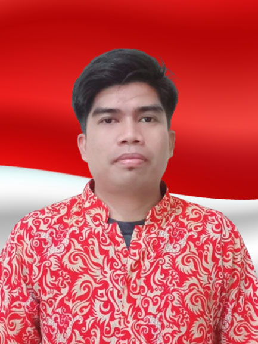
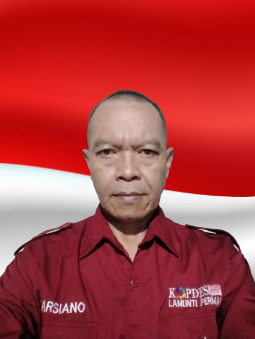
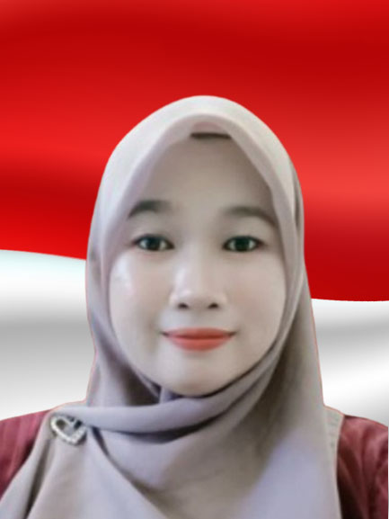
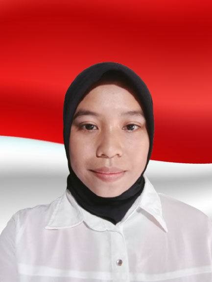
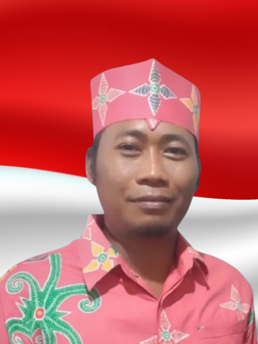
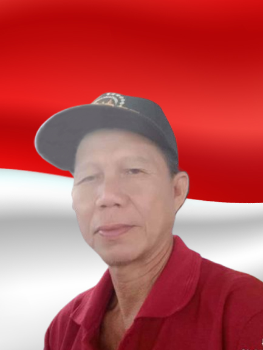
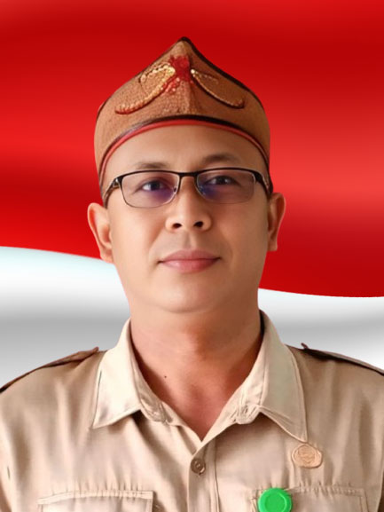

🧑 Mengenal KDMP Lamunti Permai
Sejarah Singkat
Koperasi Desa Merah Putih Lamunti Permai didirikan pada tahun 2025 atas inisiatif sekelompok petani di Desa Lamunti Permai yang memiliki visi untuk membangun kemandirian ekonomi kolektif.
Berawal dari simpan pinjam sederhana, kini kami telah berkembang melayani kebutuhan pupuk, gas LPG, dan kebutuhan pokok anggota.
Visi dan Misi
Visi
Menjadi Koperasi Primer Desa terdepan, modern, dan mandiri demi kesejahteraan seluruh anggota dan masyarakat desa Lamunti Permai.
Misi
- Meningkatkan kualitas pelayanan Unit Usaha secara berkelanjutan.
- Menciptakan tata kelola Koperasi yang transparan dan akuntabel.
- Menyediakan kebutuhan dasar petani dengan harga yang kompetitif.
Struktur Organisasi
Pengurus Koperasi

M. Ali Fahroni
Ketua Koperasi

Saugi
Wakil Ketua Bid. Usaha

Marsiano
Wakil Ketua Bid. Anggota

Dewi Sri Maharani
Bendahara

Yuliana
Sekretaris
Badan Pengawas

Sulistiawan
Ketua Pengawas

Gando Ayon
Anggota Pengawas

Mugiharto
Anggota Pengawas
Landasan Hukum
Koperasi Desa Merah Putih Lamunti Permai terdaftar dan beroperasi secara sah berdasarkan:
Badan Hukum Nomor: AHU-0013893.AH.01.29.TAHUN 2025
Dikeluarkan oleh Kementerian Hukum Republik Indonesia
Badan Hukum Nomor: AHU-0013893.AH.01.29.TAHUN 2025
Dikeluarkan oleh Kementerian Hukum Republik Indonesia